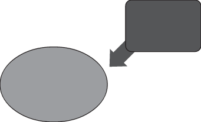

Nesta coleção, o professor encontrará vários momentos que favorecem o trabalho interdisciplinar nas diferentes seções.
Na seção “Leitura em foco”, por exemplo, gêneros textuais diversificados contribuem para articular diferentes áreas do conhecimento, estimulando a interdisciplinaridade.
Em “Ampliando conhecimentos” apresenta-se conteúdo expandido que abre novas perspectivas de estudo.
Outras seções presentes nos volumes oferecem ao estudante possibilidades diversas para que, com a mediação do professor, adquira uma visão mais global dos saberes construídos social e historicamente.
4. Práticas de alfabetização
A alfabetização é um conhecimento indispensável ao exercício da cidadania, pois contribui para a inserção dos indivíduos na sociedade, permitindo uma atuação crítica e não apenas reprodutora da situação vigente.
Isso inclui o aprendizado da língua, oral e escrita, e os conceitos básicos de Matemática.
É por sua relevância que a alfabetização é o ponto de partida para muitos adultos que buscam a EJA.
Nesse contexto, as práticas de alfabetização se concentram em ensinar adultos a ler e escrever, desenvolvendo suas habilidades de leitura e escrita em diferentes contextos, como a compreensão de textos do cotidiano e a produção de escritos.
Além disso, as práticas nesse campo visam melhorar a compreensão dos conceitos matemáticos básicos, auxiliando os estudantes a lidarem com problemas do dia a dia que envolvem cálculos, medidas e interpretação de dados.
A concepção de alfabetização passou por uma evolução significativa e, hoje, ela é compreendida como o domínio do Sistema de Escrita Alfabética (SEA) e sua aplicação em contextos sociais por meio de textos orais e escritos.
Essa ampliação do conceito de alfabetização se deve, em grande parte, pela introdução do termo “letramento”, em meados da década de 1990.

Gêneros textuais
Práticas de letramento
Sistema de escrita alfabética
ALFABETIZAÇÃO
Texto e Forma
A esse respeito, a pesquisadora Magda Soares salienta que:
o processo de alfabetização deve levar à aprendizagem não de uma mera tradução do oral para o escrito, e deste para aquele, mas à aprendizagem de uma peculiar e muitas vezes idiossincrática relação fonemas-grafemas, de um outro código, que